library(readxl)
library(mice)
library(dplyr)
library(ggplot2)
library(RColorBrewer)
library(tidyr)
library(outliers)
library(corrplot)
library(caret)
library(viridis)Analyse et Optimisation d’un trajet de voiture
Introduction
Un individu du nom de Kevin DUNN utilise une application pour suivre les coordonnées GPS lorsqu’il se rend au travail et en revient chaque jour. L’application calcule la distance parcourue (en kilomètres) en prenant en compte les données de localisation et d’altitude. Elle calcule également les vitesses moyennes et maximales en prenant en compte le temps de mouvement et d’arrêt de la voiture; ainsi que la durée totale du trajet. M. Dunn a également répertorié la date et l’heure à laquelle il commence son trajet, le sens dans lequel il l’effectue, s’il a pris ou non l’autoroute en entière et quelques commentaires. Nous n’avons pas le détail du calcul effectué par ailleurs, le conducteur a également calculé sa consommation d’essence durant chaque trajet. Monsieur Dunn souhaite optimiser sa consommation d’essence durant chaque trajet, pour ainsi effectuer des économies en réduisant les coûts liés au carburant et participer à la réduction des émissions de carbone. Nous allons donc analyser près de 205 trajets effectués par M. Dunn sur une période de 6 mois entre juillet 2011 et janvier 2012.
Nous avons 13 variables explicatives : AvgMovingSpeed, la vitesse moyenne enregistrée lorsque la voiture est en mouvement ; AvgSpeed : la vitesse moyenne pour l’ensemble du trajet ; Distance : parcourue en kilomètres ; FuelEconomy : l’estimation de l’économie de carburant ; MaxSpeed : la vitesse la plus rapide enregistrée ; MovingTime : durée pendant laquelle la voiture a été considérée comme en déplacement ; TotalTime : durée de l’ensemble du trajet en minutes ; Take407All : oui si l’autoroute 407 a été empruntée durant le trajet mais il essaie d’éviter ; Comments ; Date des voyages ; StartTime lors de l’entrée dans la voiture ; GoingTo : work or home, le sens de la marche ; DayOfWeek : de lundi à vendredi.
Au cours de notre analyse, il sera question pour nous d’analyser les informations recueillies de M. Dunn de manière adaptée et d’interpréter correctement les résultats afin de fournir à M. Dunn des résultats et des stratégies pour qu’il réussisse à mieux gérer ses consommations.
De plus, l’analyse de ses données ne se limite pas à une exploration de ses habitudes de déplacement. Pour lui présenter des résultats concrets et fiables, nous allons analyser les facteurs qui influencent l’efficacité énergétique. En ces temps où la durabilité et la responsabilité environnementales occupent une place centrale dans nos préoccupations, cette analyse pourrait s’avérer précieuse non seulement pour M. Dunn mais aussi pour d’autres agents économiques en leur permettant de contribuer activement à la réduction des émissions de gaz à effet de serre.
Le dossier du jeu de données, de sa description et le contact de M. Dunn sont accessibles sur le site : https://openmv.net/ sous le nom de “Travel times”.
Les librairies utilisées
Les Données
Ouverture des données et visualisation
travel_times <- read_excel("./data/travel-times.xlsx")
View(travel_times)
Travel=travel_timesNettoyage des données : remplacement des tirets par NA
Travel$FuelEconomy <- gsub("-", NA, Travel$FuelEconomy)
View(Travel)Modification du format des variables
Travel$StartTime<- format(Travel$StartTime, "%H:%M:%S")
Travel$Date <- as.Date(Travel$Date, format = "%m/%d/%Y")
Travel$FuelEconomy <- as.numeric(Travel$FuelEconomy)
View(Travel)Aperçu des données
summary(Travel) Date StartTime DayOfWeek GoingTo
Min. :2011-07-11 Length:205 Length:205 Length:205
1st Qu.:2011-08-22 Class :character Class :character Class :character
Median :2011-10-04 Mode :character Mode :character Mode :character
Mean :2011-10-05
3rd Qu.:2011-11-17
Max. :2012-01-06
Distance MaxSpeed AvgSpeed AvgMovingSpeed
Min. :48.32 Min. :112.2 Min. : 38.10 Min. : 50.30
1st Qu.:50.65 1st Qu.:124.9 1st Qu.: 68.90 1st Qu.: 76.60
Median :51.14 Median :127.4 Median : 73.60 Median : 81.40
Mean :50.99 Mean :127.6 Mean : 74.48 Mean : 81.98
3rd Qu.:51.63 3rd Qu.:129.8 3rd Qu.: 79.90 3rd Qu.: 86.00
Max. :60.32 Max. :140.9 Max. :107.70 Max. :112.10
NA's :1 NA's :1
FuelEconomy TotalTime MovingTime Take407All
Min. : 7.810 Min. :28.20 Min. :27.10 Length:205
1st Qu.: 8.370 1st Qu.:38.40 1st Qu.:35.67 Class :character
Median : 8.520 Median :41.25 Median :37.60 Mode :character
Mean : 8.691 Mean :41.91 Mean :37.86
3rd Qu.: 8.970 3rd Qu.:44.42 3rd Qu.:39.90
Max. :10.050 Max. :82.30 Max. :62.40
NA's :19 NA's :1 NA's :1
Comments
Length:205
Class :character
Mode :character
Un premier aperçu de notre jeu de données nous permet de constater ce qui suit :
- Nous avons 4 variables qualitatives : comments, Take407All, GoingTo, et DayOfWeek.
- Les données couvrent une période du 11 juillet 2011 au 06 janvier 2012.
- Les heures de départ sont stockées sous forme de chaînes de caractères mais ne sont pas utiles pour notre analyse.
- Les jours de la semaine où M. Dunn se déplace sont du lundi au vendredi.
- La distance des déplacements varie entre 48.32 et 60.32 km.
- La vitesse maximale pendant les déplacements varie entre 112.2 et 140.9 km/h.
- La consommation de carburant pendant les déplacements de M. Dunn ne peut pas encore être spécifiée car nous remarquons la présence de 19 valeurs manquantes.
- Le temps total des déplacements varie entre 28.20 et 82.30 minutes.
- Le temps passé en mouvement pendant les déplacements varie entre 27.10 et 62.40 minutes.
Nous décidons de ne pas tenir compte de la variable comments durant notre analyse car elle nous fournit simplement des informations supplémentaires sur la tenue des déplacements de M. Dunn.
Expulsion des colonnes comments et startTime.
subset_data <- Travel[, !colnames(Travel) %in% c( "StartTime")]
subset_data <- subset_data[, -12, drop = FALSE]
View(subset_data)
Travel=subset_data
View(Travel)Visualisation des données manquantes
md.pattern(Travel, rotate.names = TRUE)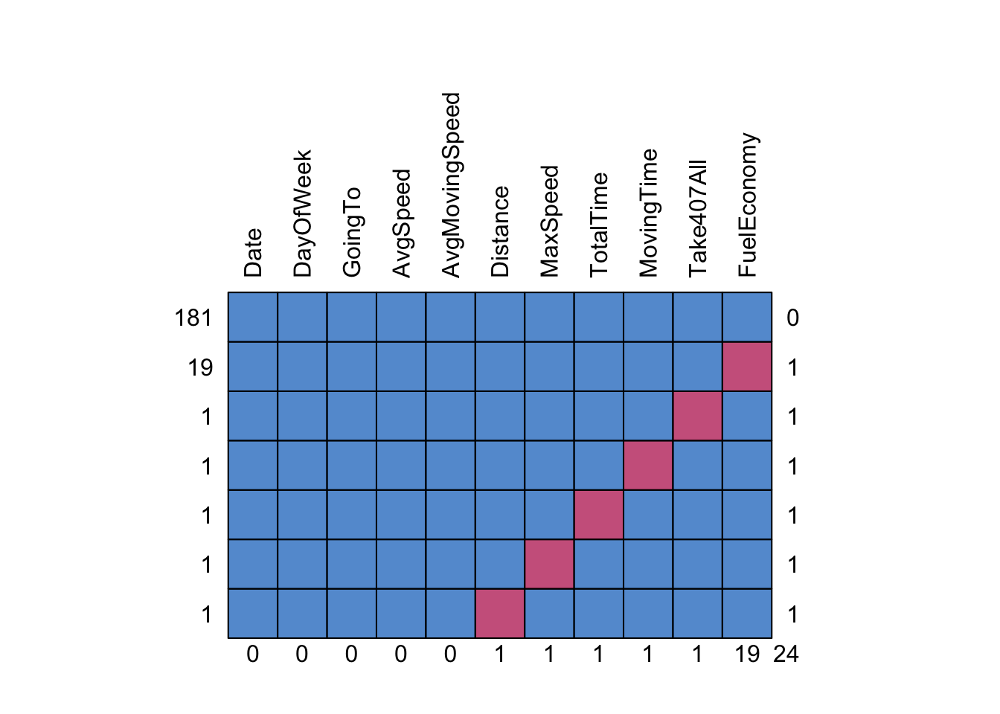
Date DayOfWeek GoingTo AvgSpeed AvgMovingSpeed Distance MaxSpeed TotalTime
181 1 1 1 1 1 1 1 1
19 1 1 1 1 1 1 1 1
1 1 1 1 1 1 1 1 1
1 1 1 1 1 1 1 1 1
1 1 1 1 1 1 1 1 0
1 1 1 1 1 1 1 0 1
1 1 1 1 1 1 0 1 1
0 0 0 0 0 1 1 1
MovingTime Take407All FuelEconomy
181 1 1 1 0
19 1 1 0 1
1 1 0 1 1
1 0 1 1 1
1 1 1 1 1
1 1 1 1 1
1 1 1 1 1
1 1 19 24La visualisation des données nous permet de constater que nous avons 24 données manquantes, réparties comme suit : la variable FuelEconomy a 19 valeurs manquantes, et une valeur manquante respectivement pour les variables Distance, MaxSpeed, TotalTime, MovingTime, et Take407All.
Nous allons par la suite effectuer une analyse univariée, une analyse bivariée, et remplacer nos 24 valeurs manquantes.
Calcul des données manquantes simples
Travel$MovingTime[187] <- round((Travel$Distance[187] / Travel$AvgMovingSpeed[187])*60 ,1)
Travel$Distance[155] <- round((Travel$MovingTime[155])*0.0167*(Travel$AvgMovingSpeed[155]),2)
Travel$TotalTime[66] <- round((Travel$Distance[187] / Travel$AvgSpeed[187])*60 ,1)
md.pattern(Travel, rotate.names = TRUE)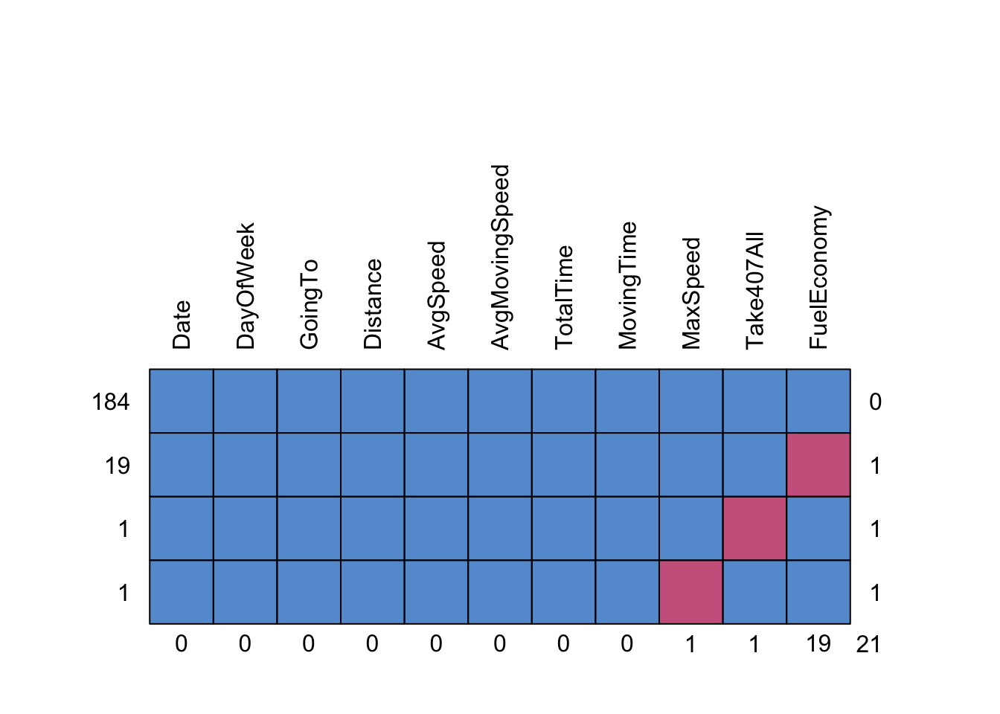
Date DayOfWeek GoingTo Distance AvgSpeed AvgMovingSpeed TotalTime
184 1 1 1 1 1 1 1
19 1 1 1 1 1 1 1
1 1 1 1 1 1 1 1
1 1 1 1 1 1 1 1
0 0 0 0 0 0 0
MovingTime MaxSpeed Take407All FuelEconomy
184 1 1 1 1 0
19 1 1 1 0 1
1 1 1 0 1 1
1 1 0 1 1 1
0 1 1 19 21Analyse Univariée
Analyse des variables qualitatives
Les 3 variables qualitatives sont : Take407All, GoingTo, et DayOfWeek. Nous allons réaliser des tableaux de contingence car nos variables sont finies.
Tableaux de contingence
Nous utiliserons la fonction count() de la librairie dplyr car elle permet de voir les valeurs manquantes.
count(Travel,Take407All)# A tibble: 3 × 2
Take407All n
<chr> <int>
1 No 169
2 Yes 35
3 <NA> 1count(Travel,GoingTo)# A tibble: 2 × 2
GoingTo n
<chr> <int>
1 GSK 105
2 Home 100table(Travel$DayOfWeek)
Friday Monday Thursday Tuesday Wednesday
27 39 44 48 47 count(Travel,DayOfWeek)# A tibble: 5 × 2
DayOfWeek n
<chr> <int>
1 Friday 27
2 Monday 39
3 Thursday 44
4 Tuesday 48
5 Wednesday 47La sortie indique le décompte du nombre d’occurrences de chaque valeur de la variable Take407All. Ainsi, nous pouvons dire que sur les 205 trajets effectués par M. Dunn, il emprunte l’autoroute 407 35 fois et ne l’emprunte pas 169 fois. De plus, parmi les 205 trajets, il y a un jour pour lequel nous ne savons pas par quelle voie M. Dunn roule, ce qui correspond à une donnée manquante. Nous la traiterons plus tard, à l’aide d’une régression linéaire et des variables AvgSpeed, MaxSpeed et MovingTime.
Dans ces 205 trajets, M. Dunn effectue 100 trajets de son lieu de travail vers sa maison et 105 trajets de sa maison vers son lieu de travail.
Enfin, il se déplace durant 5 jours de la semaine, du lundi au vendredi. Plus précisément, il a effectué 27 trajets le vendredi, 39 trajets le lundi, 44 trajets le jeudi, 48 trajets le mardi, et 47 trajets le mercredi.
Nous constatons donc que durant les 6 mois, il s’est moins déplacé en voiture le vendredi.
Nous décidons par la suite d’effectuer une représentation graphique pour mieux illustrer ces données.
Représentation graphique
Travel |>
ggplot() +
aes(x = Take407All , fill = Take407All ) +
geom_bar() +
theme_classic()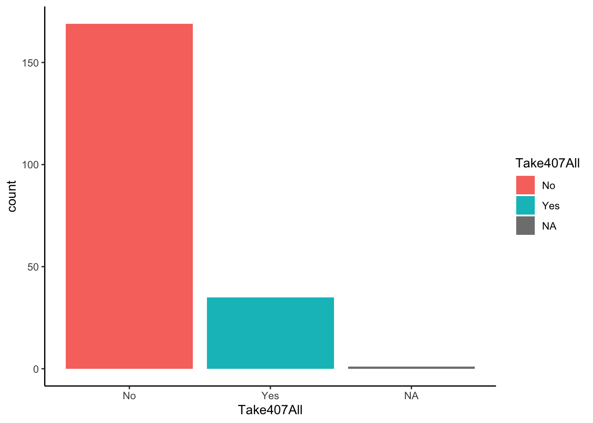
Travel |>
ggplot() +
aes(x = GoingTo , fill = GoingTo ) +
geom_bar() +
theme_classic()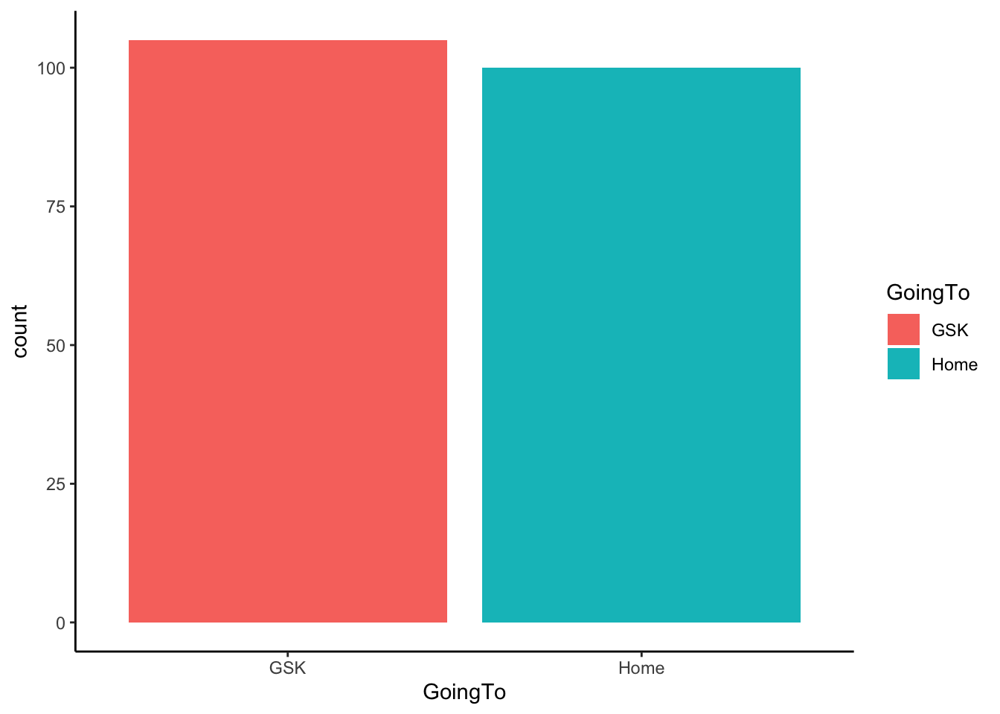
Travel |>
ggplot() +
aes(x = DayOfWeek , fill = DayOfWeek ) +
geom_bar() +
theme_classic()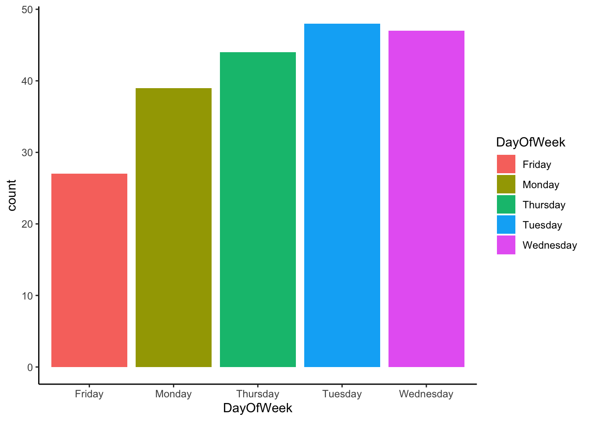
Analyse des variables Quantitatives
Nous allons explorer la dispersion de chacune de nos 8 variables quantitatives en utilisant des histogrammes.
Travel |>
ggplot() +
aes(x = Distance) +
geom_histogram(binwidth = 1) +
theme_classic()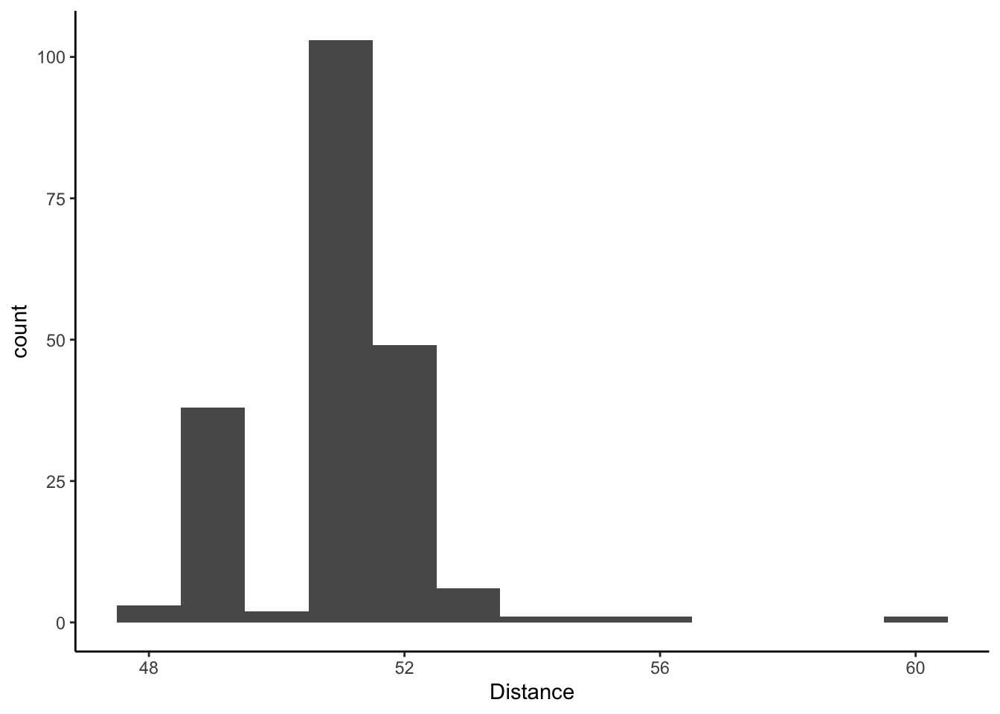
Travel |>
ggplot() +
aes(x = MaxSpeed ) +
geom_histogram(binwidth = 1) +
theme_classic()Warning: Removed 1 row containing non-finite outside the scale range
(`stat_bin()`).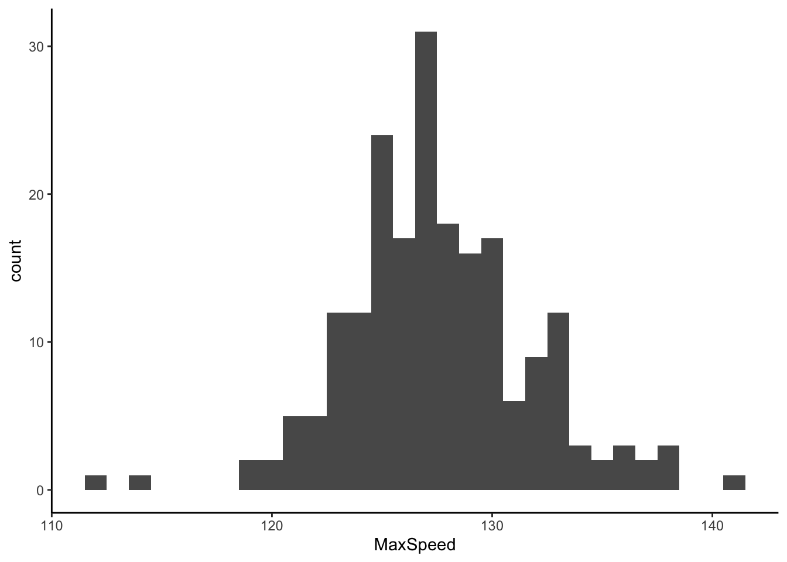
Travel |>
ggplot() +
aes(x = AvgSpeed ) +
geom_histogram(binwidth = 1) +
theme_classic()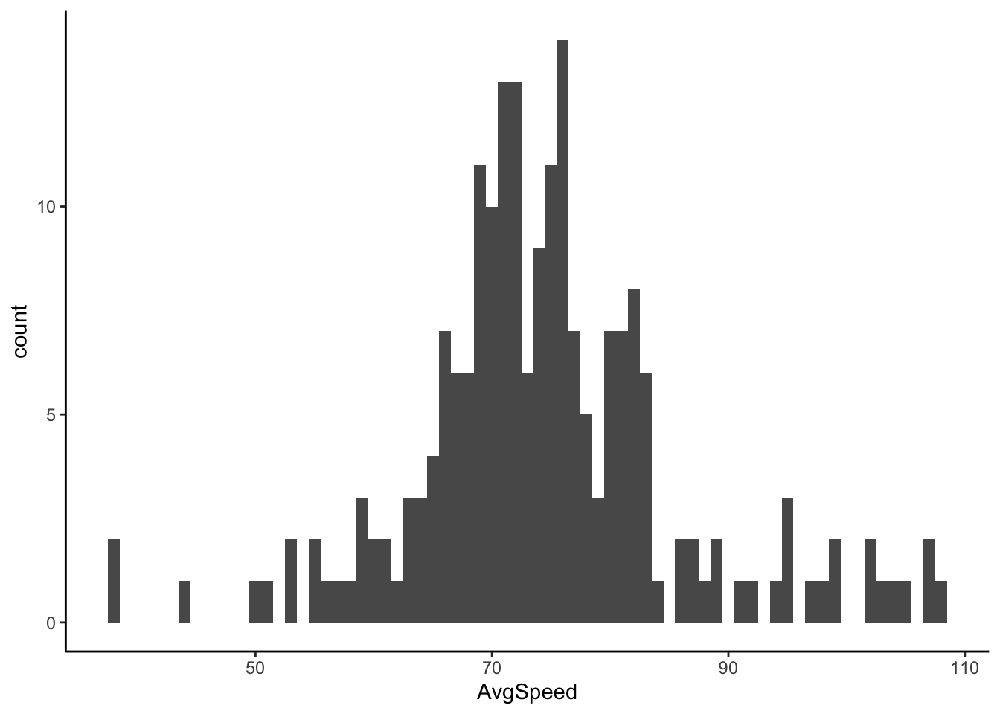
Travel |>
ggplot() +
aes(x = AvgMovingSpeed ) +
geom_histogram(binwidth = 1) +
theme_classic()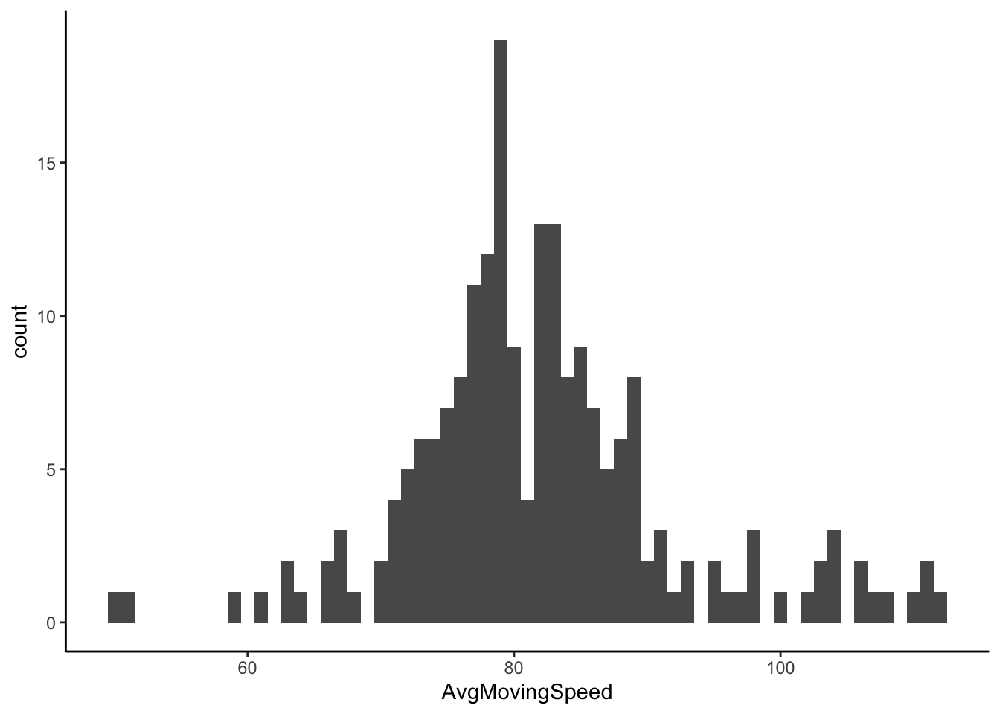
Travel |>
ggplot() +
aes(x = TotalTime ) +
geom_histogram(binwidth = 1) +
theme_classic()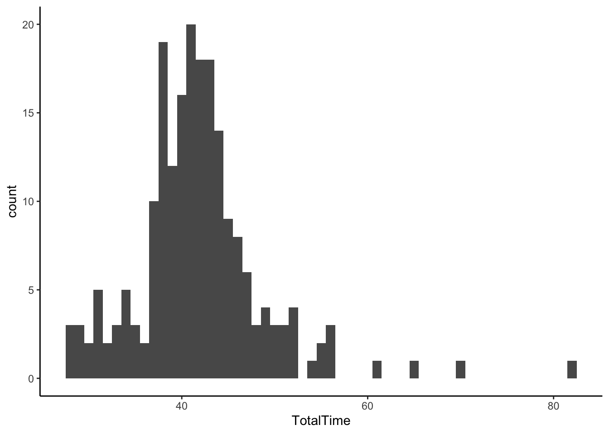
Travel |>
ggplot() +
aes(x = MovingTime ) +
geom_histogram(binwidth = 1) +
theme_classic()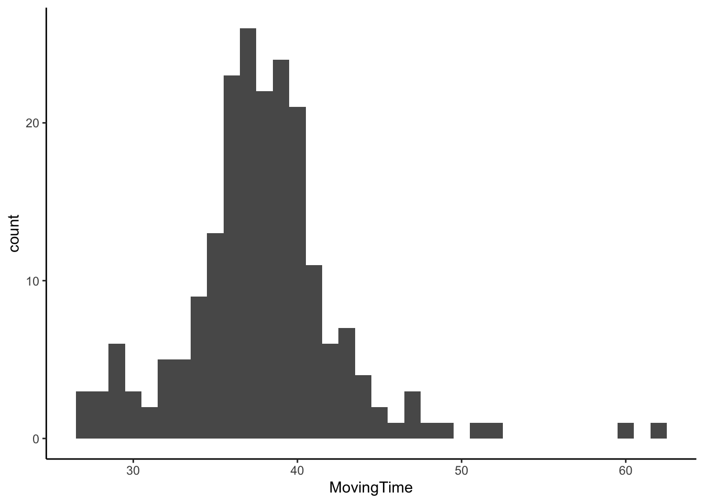
Travel |>
ggplot() +
aes(x = FuelEconomy ) +
geom_histogram() +
theme_classic()`stat_bin()` using `bins = 30`. Pick better value with `binwidth`.Warning: Removed 19 rows containing non-finite outside the scale range
(`stat_bin()`).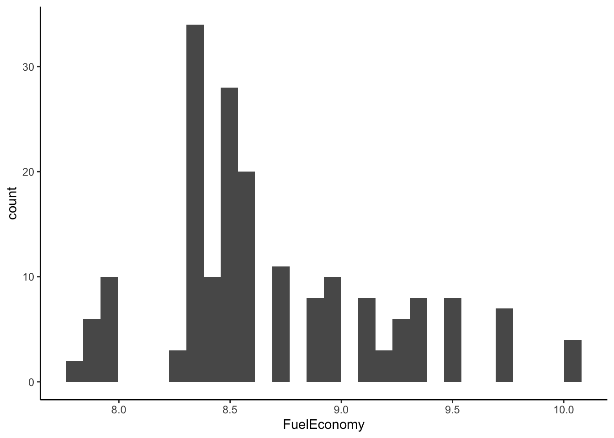
Nous générons ainsi les histogrammes des variables : FuelEconomy, MovingTime, TotalTime, AvgMovingSpeed, AvgSpeed, MaxSpeed, et Distance. Cela nous permet de visualiser la distribution des valeurs telles que la vitesse moyenne des déplacements, la vitesse la plus rapide enregistrée, l’estimation de l’économie du carburant, la distance parcourue en kilomètres, la durée de l’ensemble du trajet en minutes, et la vitesse moyenne pour l’ensemble des trajets. Comme constaté, ultérieurement certaines d’entre elles ont des valeurs manquantes. Aussi, La distribution de la variable économie de carburant est différente de celle des autres variables, probablement parce que les valeurs se répètent plusieur fois. En effet M. Dunn indique sur le site internet que le calcule de cette variable est imprécis sans donner de détails.
Cas particulier des dates
Dans notre cas, nous avons deux années d’études.
DayOfWeek <- c("lundi", "mardi", "mercredi", "jeudi", "vendredi")
ggplot(Travel, aes(x = DayOfWeek, fill = DayOfWeek)) +
geom_bar(position = "dodge") +
facet_wrap(~ format(Date, "%B"), scales = "free_x") + # Utiliser le nom complet du mois
theme_bw() +
labs(title = "Nombre de trajets par jour de la semaine, réparti par mois",
x = "Jour de la semaine", y = "Nombre de trajets", fill = "Jour de la semaine")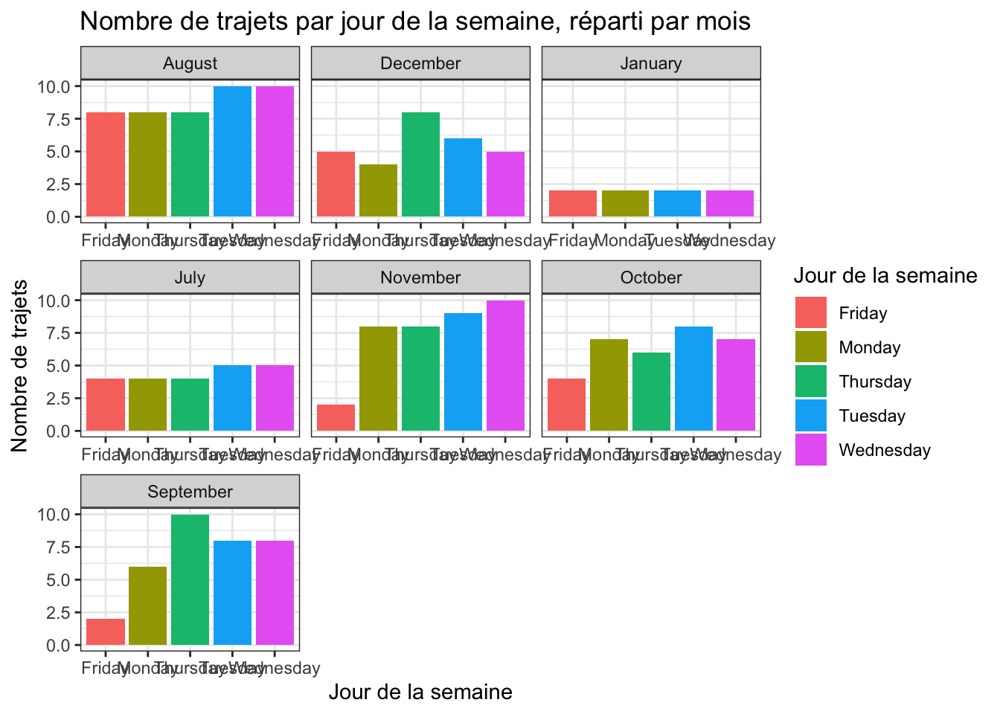
Nous avons créé un graphique à barres montrant le nombre de trajets par jour de la semaine, avec les jours de la semaine réorganisés dans l’ordre spécifique.
Cas particulier d’une valeur aberrante reperée visuellement
Travel$AvgSpeedVar <- Travel$AvgSpeed - Travel$AvgMovingSpeed
ggplot(Travel, aes(x = Date)) +
geom_line(aes(y = AvgSpeed), color = "blue", linetype = "solid", size = 1) +
geom_line(aes(y = AvgMovingSpeed), color = "red", linetype = "solid", size = 1) +
theme_bw() +
labs(title = "Variation de la vitesse moyenne totale et en mouvement au fil du temps",
x = "Date", y = "Vitesse") +
scale_x_date(date_labels = "%Y-%m", date_breaks = "1 month")Warning: Using `size` aesthetic for lines was deprecated in ggplot2 3.4.0.
ℹ Please use `linewidth` instead.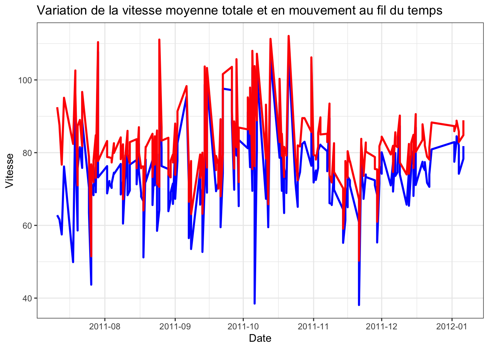
À l’aide de la nouvelle variable et des boxplots suivantes, nous pourrons décider de traiter ou non la valeur abberante en question que nous pouvons observer en Octobre 2011.
Boxplot
Travel |>
pivot_longer(
cols = where(is.numeric)
) |>
ggplot() +
aes( y = value) +
facet_wrap(~ name, scales = "free_y") +
geom_boxplot(na.rm = TRUE) +
theme_light()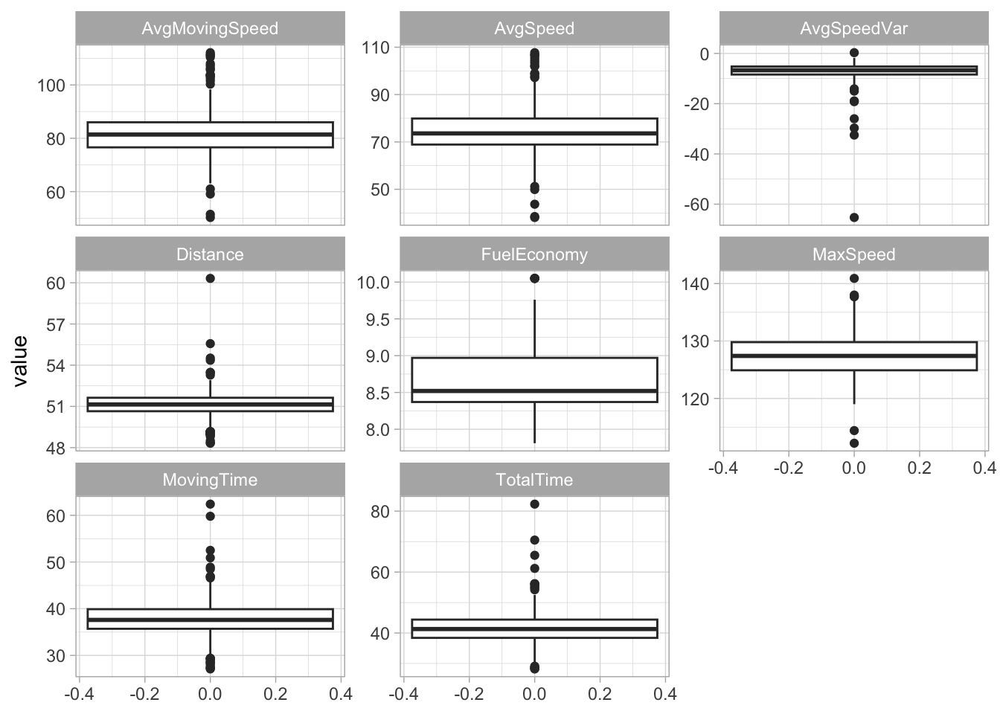
# Tratement de la valeur aberrante mentionnée précédemment
Travel$AvgSpeed[99] <- round(Travel$Distance[99] / (Travel$TotalTime[99] / 60),1)
#Suppression de la variable annexe
Travel <- Travel[, -12]On observe que toutes nos variables quantitatives présentent des valeurs aberrantes : les boîtes à moustaches mettent en évidence ces valeurs atypiques. La variable FuelEconomy ne présente qu’une seule valeur aberrante, mais sa boîte à moustaches révèle une distribution asymétrique des données, avec une médiane plus proche du premier quartile. Nous remarquons ainsi que dans moins de la moitié de ses trajets, M. Dunn réalise une économie de carburant de 8.5 unités.
Les autres variables ont plus de 3 valeurs aberrantes. Nous cherchons à comprendre la raison de ces valeurs atypiques, et décidons de les conserver pour une analyse plus approfondie de la consommation d’énergie et des déplacements de M. Dunn.
Nous passons ensuite à l’analyse bivariée de nos données.
Analyse bivariée
Analyse quanti-quanti
L’objectif ici est de déterminer si l’une des variables peut être calculée à partir de l’autre. Plus précisément, nous tentons d’expliquer la corrélation entre deux variables quantitatives.
Nous représentons la matrice de corrélation, qui présente les coefficients de corrélation entre toutes les paires de variables de l’ensemble des données. Chaque cellule de la matrice représente le degré de corrélation entre deux variables spécifiques.
variables_numeriques <- Travel[sapply(Travel, is.numeric)]
matrice_correlation <- cor(variables_numeriques, use = "complete.obs")
corrplot(matrice_correlation, type = "upper", order = "hclust",
addCoef.col = "black",
tl.col = "black", tl.srt = 90, tl.cex = 0.9, number.cex = 0.8,
diag = FALSE, col = brewer.pal(n = 9, name = "Blues"))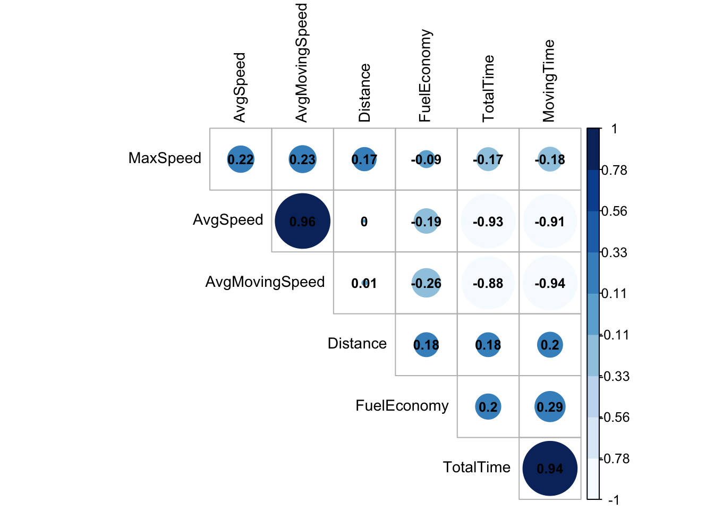
Les coefficients de corrélation varient de -1 à 1. Un coefficient de 1 indique une corrélation parfaite, ce qui signifie que lorsque la première variable augmente, la deuxième augmente également de manière linéaire. Un coefficient de 0 indique l’absence de corrélation linéaire entre les deux variables.
Dans notre cas, la variable AvgSpeed présente une forte corrélation positive avec la variable AvgMovingSpeed, avec un coefficient de 0.89, et une forte corrélation négative avec TotalTime de -0.87. Cela signifie que lorsque la vitesse moyenne générale d’un trajet augmente, la vitesse moyenne pendant le mouvement augmente également ; et lorsque la vitesse moyenne générale augmente, le temps de trajet diminue. Ainsi, une vitesse élevée conduit à des temps de trajet plus courts.
AvgMovingSpeed et MovingTime sont fortement corrélées négativement (-0.94), suggérant que lorsque la vitesse moyenne en mouvement augmente, le temps de déplacement total diminue, et vice versa. Cela peut être lié à l’efficacité des déplacements, à la fluidité de la circulation et/ou au style de conduite de M. Dunn.
Analyse quali-quali
count(Travel, GoingTo, DayOfWeek) |>
ggplot() +
aes(x = DayOfWeek, y = GoingTo, fill = n) +
geom_tile(stat = "identity") +
theme_light()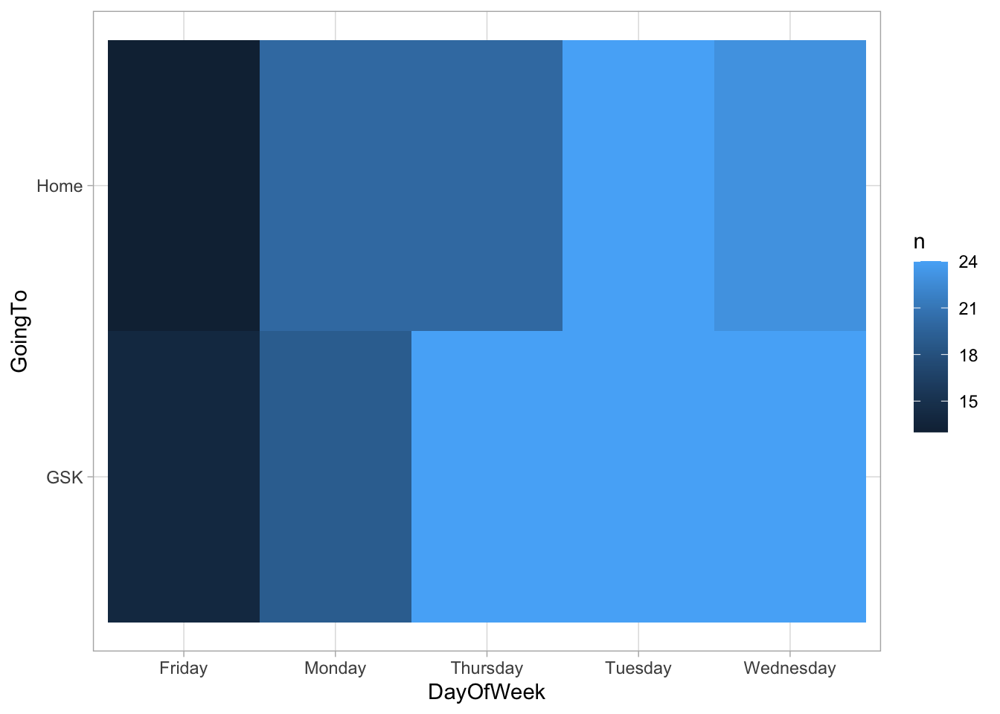
count(Travel, GoingTo,Take407All) |>
ggplot() +
aes(x = Take407All, y = GoingTo, fill = n) +
geom_tile(stat = "identity") +
theme_light()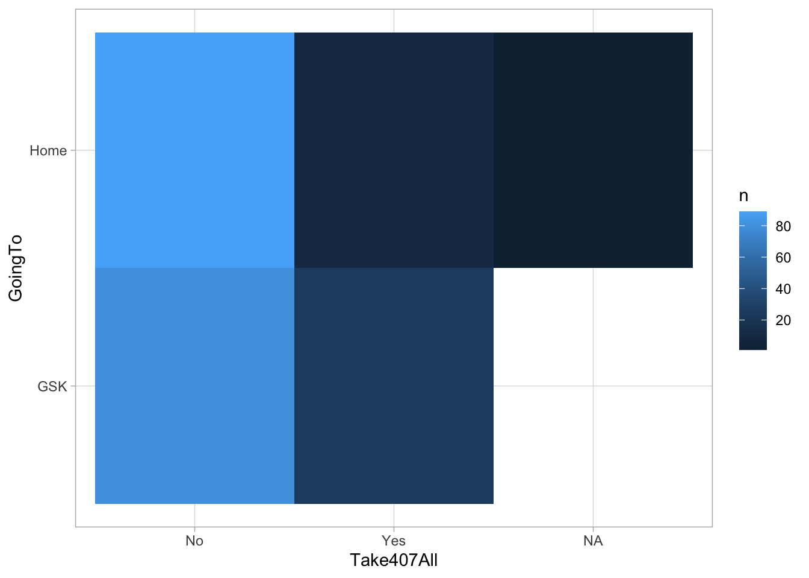
Nous avons généré deux heatmaps :
Le premier représente graphiquement le nombre d’occurrences croisées entre les destinations (GoingTo) et les jours de la semaine (DayOfWeek). Chaque tuile dans le graphique correspond à une combinaison de destination et de jour de la semaine, et la couleur de la tuile indique le nombre d’occurrences pour cette combinaison.
Le premier est censé représenter le nombre de trajets en fonction de la destination et des jours de la semaine. Cependant, au niveau des jours de la semaine, nous observons des cases NA, probablement dues à un problème au niveau du jeu de données.
Analyse quali-quanti
Analyse avec la variable quali GoingTo
palette_couleurs <- colorRampPalette(c("red", "blue", "green", "purple"))(length(unique(Travel$GoingTo)))
vecteur_couleur <- setNames(palette_couleurs, unique(Travel$GoingTo))
Travel |>
pivot_longer(
cols = Distance:MaxSpeed:TotalTime:AvgSpeed:AvgMovingSpeed:MovingTime:FuelEconomy ,
names_to = "mesure",
values_to = "valeur"
) |>
ggplot() +
aes(y = valeur, x = GoingTo, color = GoingTo) +
geom_boxplot(alpha = 0.5) +
scale_color_manual(values = vecteur_couleur) +
facet_wrap(~ mesure, scales = "free_y") +
theme_minimal() +
theme(
axis.text.y = element_text(size = 8),
axis.text.x = element_text(angle = 45, vjust = 1, hjust = 1),
legend.position = "right"
)Warning in x:y: numerical expression has 2 elements: only the first usedWarning in x:y: numerical expression has 6 elements: only the first usedWarning in x:y: numerical expression has 3 elements: only the first usedWarning in x:y: numerical expression has 4 elements: only the first usedWarning in x:y: numerical expression has 7 elements: only the first usedWarning: Removed 20 rows containing non-finite outside the scale range
(`stat_boxplot()`).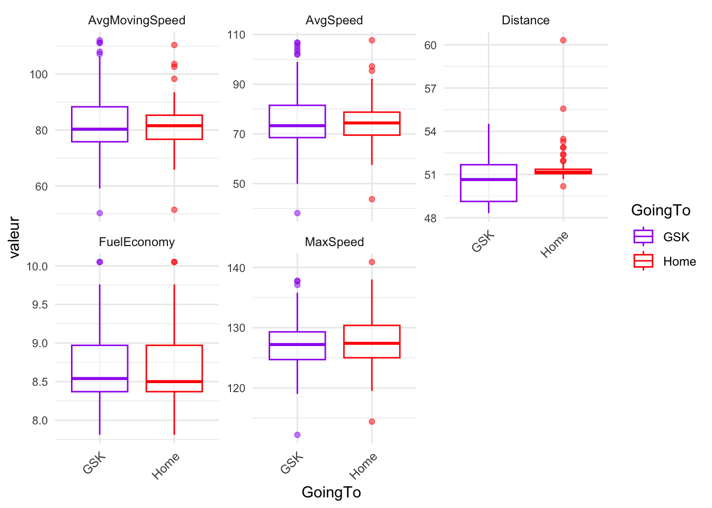
Nous avons généré un graphique à boîtes avec des boîtes à moustaches pour différentes mesures, organisées par destination (GoingTo) : en rouge lorsque M.Dunn rentre chez lui et en violet lorsqu’il se déplace vers son lieu de travail. Il y a plus d’une valeur aberrante par boîte. Les boîtes sont presque toutes asymétriques. Par exemple, pour la variable FuelEconomy, sur l’ensemble des trajets que M.Dunn effectue vers son lieu de travail (GSK), durant moins de la moitié des trajets, M.Dunn réalise une économie de carburant de 8.6 unités. La vitesse moyenne enregistrée lorsque la voiture est en déplacement durant moins de la moitié de ses trajets vers son lieu de travail (GSK) est de 80 minutes.
Analyse avec la variable quali DayOfWeek
Travel |>
pivot_longer(
cols = c(Distance, MaxSpeed, AvgMovingSpeed, TotalTime, FuelEconomy, AvgSpeed, MovingTime),
names_to = "mesure",
values_to = "valeur"
) |>
ggplot() +
aes(y = valeur, x = DayOfWeek, color = as.factor(DayOfWeek)) +
geom_boxplot() +
geom_jitter(alpha = 0.3) +
facet_wrap(~ mesure, scales = "free_y") +
scale_color_manual(values = rainbow(length(unique(Travel$DayOfWeek)))) +
theme_bw()Warning: Removed 20 rows containing non-finite outside the scale range
(`stat_boxplot()`).Warning: Removed 20 rows containing missing values or values outside the scale range
(`geom_point()`).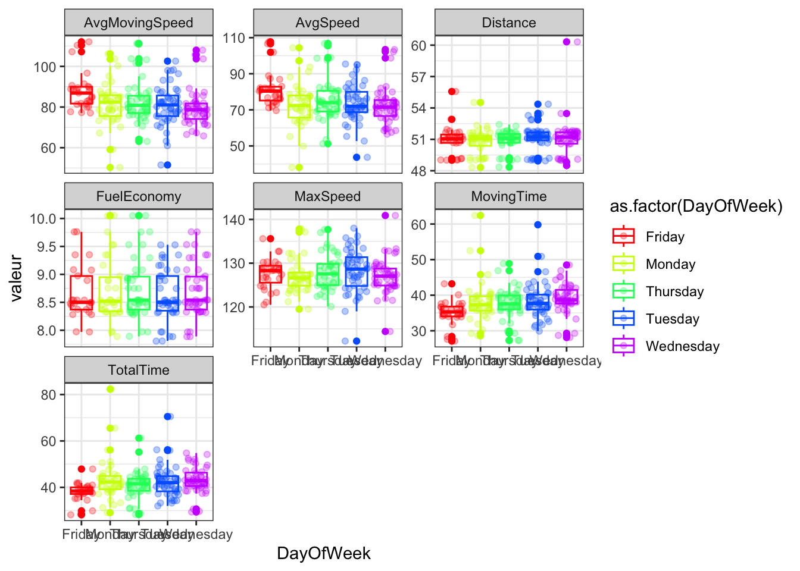
Ici, nous avons la représentation graphique avec des boîtes à moustaches de différentes mesures, organisées par jour de la semaine. Ainsi, durant les cinq premiers jours de la semaine, nous avons la vitesse maximale pendant les trajets pour chaque jour de la semaine, ainsi que les économies de carburant réalisées. Nous remarquons que pour moins de la moitié de ses trajets, M. Dunn effectue des économies d’environ 8.5 unités par jour et qu’il va plus rapidement le mardi.
Analyse bivariée avec la variable qualitative Take407All
Travel |>
pivot_longer(
cols = Distance:MaxSpeed:AvgMovingSpeed:TotalTime:FuelEconomy :AvgSpeed:MovingTime ,
names_to = "mesure",
values_to = "valeur"
) |>
ggplot() +
aes(y = valeur, x = Take407All, color = Take407All) +
geom_boxplot() +
geom_jitter(alpha = 0.3) +
facet_wrap(~ mesure, scales = "free_y") +
theme_bw()Warning in x:y: numerical expression has 2 elements: only the first usedWarning in x:y: numerical expression has 4 elements: only the first usedWarning in x:y: numerical expression has 6 elements: only the first usedWarning in x:y: numerical expression has 5 elements: only the first usedWarning in x:y: numerical expression has 3 elements: only the first usedWarning: Removed 20 rows containing non-finite outside the scale range
(`stat_boxplot()`).Warning: Removed 20 rows containing missing values or values outside the scale range
(`geom_point()`).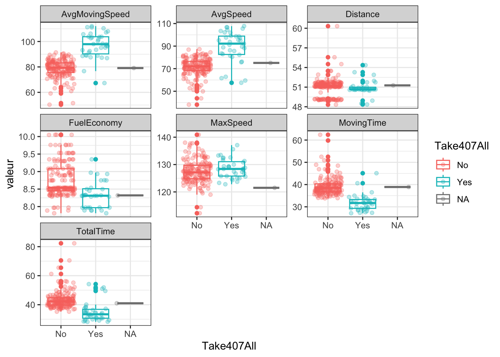
Ici, nous avons la représentation des boîtes en fonction de l’emprunt ou non du péage 407. La boîte grise représente les valeurs manquantes. On peut observer que M. Dunn est plus rapide lorsqu’il emprunte l’autoroute. Les distances parcourues sont plus courtes et, pour la plupart de ses trajets effectués sur l’autoroute, il réalise une économie de carburant de 8.3 unités. De plus, le temps mis pour effectuer un trajet est plus court lorsqu’il emprunte l’autoroute.
Traitement de la variable FuelEconmy et de la valeur manquante MaxSpeed
Pour la vitesse maximale du trajet ligne 170 et pour les 19 valeurs manquantes nous faisons à nouveau appel au package mice.
tables_imputation <- mice(Travel, m=5)
iter imp variable
1 1 MaxSpeed FuelEconomy
1 2 MaxSpeed FuelEconomy
1 3 MaxSpeed FuelEconomy
1 4 MaxSpeed FuelEconomy
1 5 MaxSpeed FuelEconomy
2 1 MaxSpeed FuelEconomy
2 2 MaxSpeed FuelEconomy
2 3 MaxSpeed FuelEconomy
2 4 MaxSpeed FuelEconomy
2 5 MaxSpeed FuelEconomy
3 1 MaxSpeed FuelEconomy
3 2 MaxSpeed FuelEconomy
3 3 MaxSpeed FuelEconomy
3 4 MaxSpeed FuelEconomy
3 5 MaxSpeed FuelEconomy
4 1 MaxSpeed FuelEconomy
4 2 MaxSpeed FuelEconomy
4 3 MaxSpeed FuelEconomy
4 4 MaxSpeed FuelEconomy
4 5 MaxSpeed FuelEconomy
5 1 MaxSpeed FuelEconomy
5 2 MaxSpeed FuelEconomy
5 3 MaxSpeed FuelEconomy
5 4 MaxSpeed FuelEconomy
5 5 MaxSpeed FuelEconomyWarning: Number of logged events: 3summary(tables_imputation)Class: mids
Number of multiple imputations: 5
Imputation methods:
Date DayOfWeek GoingTo Distance MaxSpeed
"" "" "" "" "pmm"
AvgSpeed AvgMovingSpeed FuelEconomy TotalTime MovingTime
"" "" "pmm" "" ""
Take407All
""
PredictorMatrix:
Date DayOfWeek GoingTo Distance MaxSpeed AvgSpeed AvgMovingSpeed
Date 0 0 0 1 1 1 1
DayOfWeek 1 0 0 1 1 1 1
GoingTo 1 0 0 1 1 1 1
Distance 1 0 0 0 1 1 1
MaxSpeed 1 0 0 1 0 1 1
AvgSpeed 1 0 0 1 1 0 1
FuelEconomy TotalTime MovingTime Take407All
Date 1 1 1 0
DayOfWeek 1 1 1 0
GoingTo 1 1 1 0
Distance 1 1 1 0
MaxSpeed 1 1 1 0
AvgSpeed 1 1 1 0
Number of logged events: 3
it im dep meth out
1 0 0 constant DayOfWeek
2 0 0 constant GoingTo
3 0 0 constant Take407AllTravel <- complete(tables_imputation, sample(1:5,1))
md.pattern(Travel, rotate.names = TRUE)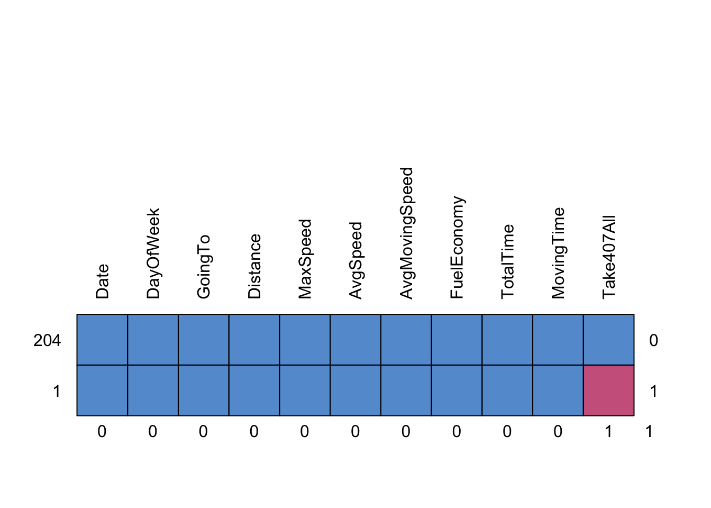
Date DayOfWeek GoingTo Distance MaxSpeed AvgSpeed AvgMovingSpeed
204 1 1 1 1 1 1 1
1 1 1 1 1 1 1 1
0 0 0 0 0 0 0
FuelEconomy TotalTime MovingTime Take407All
204 1 1 1 1 0
1 1 1 1 0 1
0 0 0 1 1Pour les deux colonnes, mice utilise la méthode de la PMM (Predictive Mean Matching), pour les deux variables quantitatives. Il calcule 5 valeurs pour chaque cellule vide. Enfin, à l’aide de la fonction sample, je recrée un dataframe complet avec des valeurs imputée aléatoirement.
Régression logistique
library(caret)
Trajet <- Travel[complete.cases(Travel$Take407All), ]
Trajet$Take407All <- ifelse(Trajet$Take407All == "Yes", 1, 0)
model <- glm(Take407All ~ MaxSpeed + AvgSpeed + MovingTime,
data = Trajet,
family = binomial)
missing_data <- Travel[is.na(Travel$Take407All), c("MaxSpeed", "AvgSpeed", "MovingTime")]
predictions <- predict(model, newdata = missing_data, type = "response")
Travel$Take407All[is.na(Travel$Take407All)] <- round(predictions)
Travel$Take407All <- ifelse(Travel$Take407All == "Yes", 1, 0)
Travel$Take407All <- as.factor(Travel$Take407All)
md.pattern(Travel, rotate.names = TRUE) /\ /\
{ `---' }
{ O O }
==> V <== No need for mice. This data set is completely observed.
\ \|/ /
`-----'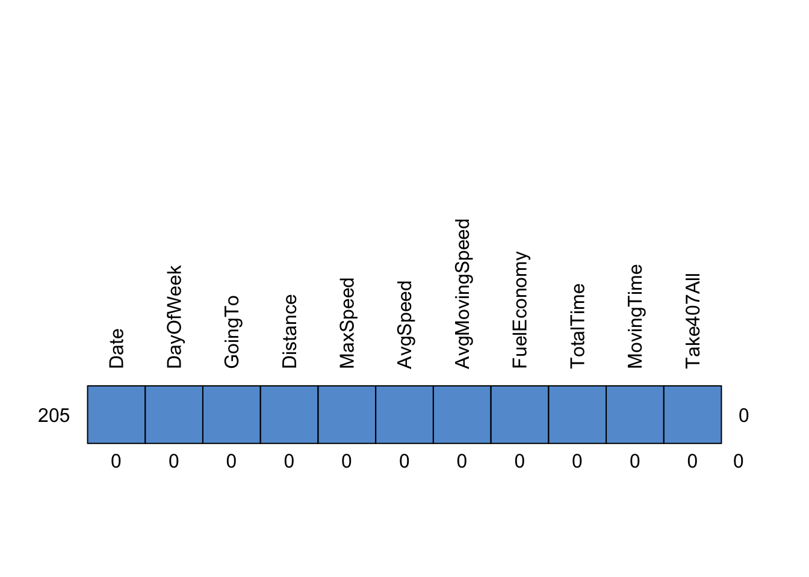
Date DayOfWeek GoingTo Distance MaxSpeed AvgSpeed AvgMovingSpeed
205 1 1 1 1 1 1 1
0 0 0 0 0 0 0
FuelEconomy TotalTime MovingTime Take407All
205 1 1 1 1 0
0 0 0 0 0À partir d’un dataframe où il n’y a plus de valeurs manquantes, nous effectuons une régression logistoque afin de déterminer qu’elle est la valeur de la ligne 71 de la colonne Take407All. Grâce à la fonction predict du package stats Nous trouvons que la valeur manquante était “No”. La prédiction est correct. Il aurait été intéressant de réaliser une matrice de confusion pour évaluer le modèle de prédiction.